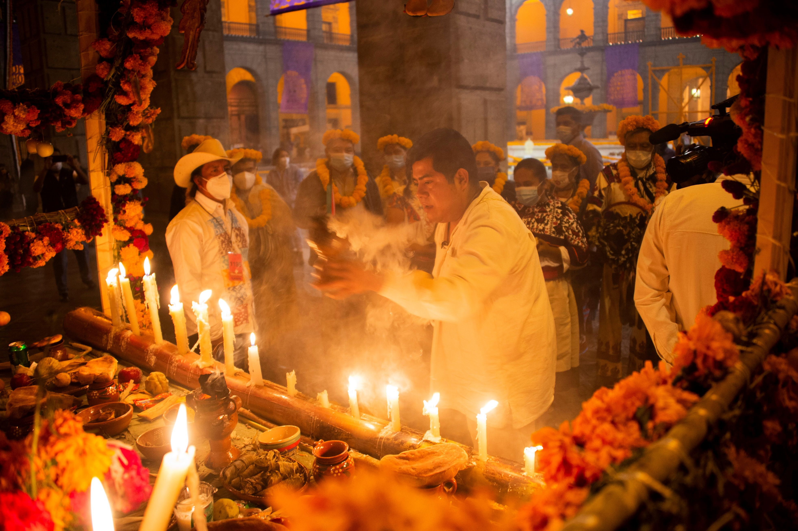
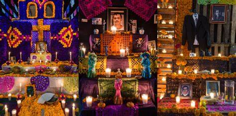
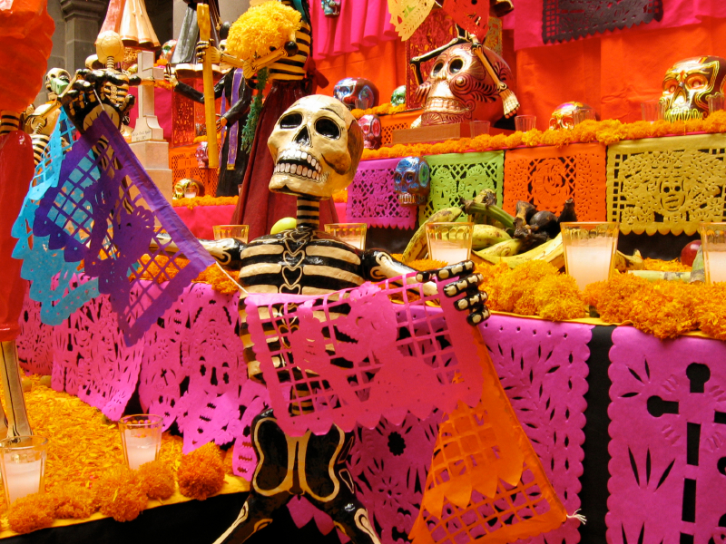

Fechas de Día de Muertos en México: |
- Se cree que el 28 de octubre visitan las ofrendas aquellas almas que murieron de forma trágica.
- El 29 llegan quienes fallecieron por ahogamiento.
- Durante el 30 y el 31 de octubre vienen los espíritus de aquellos niños que fallecieron sin ser bautizados.
|
 |
: Características del Día de Muertos |
- Altar de muertos:
Se crean altares dedicados a los seres queridos fallecidos, decorados con fotos de los difuntos, velas, flores, comida y bebida que les gustaba en vida.
- Ofrendas:
Se visitan los cementerios y se colocan ofrendas en las tumbas de los difuntos para rendirles homenaje y recordarlos. Estas ofrendas pueden incluir comida, bebida, flores y objetos simbólicos.
- Calaveras y catrinas:
Se utilizan calaveras y representaciones de la muerte, como las catrinas. Estas figuras suelen ser coloridas y alegres, en lugar de sombrías, para reflejar la actitud festiva hacia la muerte en esta tradición.
- Pan de muerto:
Este es un tipo especial de pan dulce que se elabora para la celebración y está decorado simulando huesos y calaveras.
|
 |
Elementos de la ofrenda de Día de Muertos: |
- Mantel Blanco:
- El color del mantel es importante debido a que significa pureza y alegría para recibir a los fieles difuntos.
- Fotografías de los difuntos:
- Es muy común colocar retratos de las personas amadas que ya no están entre nosotros.
- Incienso o copal:
- El humo que desprende el copal o incienso, es la guía olfativa para que nuestros muertos puedan llegar con nosotros.
- Papel Picado:
- Además de ser una decoración muy bella y llamativa, el papel picado representa el aire.
- Agua:
- Según las creencias, cuando los muertos llegan al altar están sedientos debido al viaje. Por ello es imprescindible ofrecerles agua fresca y limpia.
- Veladoras:
- Estas representan el fuego y la luz. Igual que el incienso, funcionan como una guía para que las almas.
- Bebidas o platillo favoritos de los difuntos:
- Ya sea pozole, tepache, tequila o lo que sea que nuestros difuntos adoraran consumir en vida, es importante ponerlos en el altar. Esto debido a que son días para celebrar su regreso.
- Flor de cempasúchil:
- Esta flor de apariencia esponjosa también es conocida como “flor de veinte pétalos”. Se utilizan principalmente para decorar o crear caminos que guíen los espíritus de nuestros muertos..
- Pan de muerto:
- Además de delicioso, el pan de muerto es la representación del esqueleto de los difuntos.
|
 |